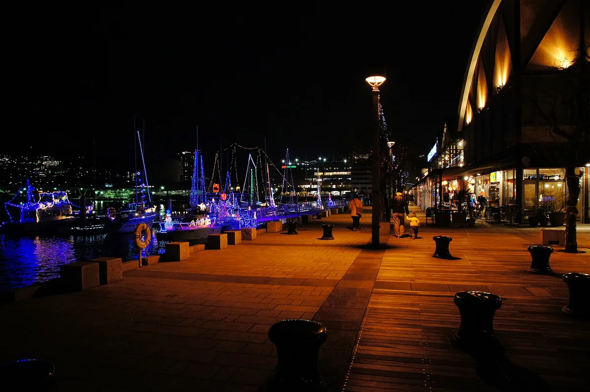

先算单程票，再决定 JR Pass
本线路以单程票为比较基线。JR 北部九州铁路周游券覆盖长崎、西九州新干线及区内 JR 九州列车；博多—小仓的山阳新干线不包含，即使两站都在九州。
若买周游券，博多—小仓可改乘 JR 九州特急 Sonic，或另买山阳新干线票。D1 与 D8 相隔八天，连续 5 日券无法同时覆盖两天，不要只因跨城就默认购买。
JR 九州周游券：覆盖、价格与条件 ↗JAPAN · KYUSHU · 9 DAYS / 8 NIGHTS · DRAFT
在港口发呆，在街巷吃饭，累了就回酒店。
把每一次换乘写清楚，让旅途留给风景。

白天在平地港口、日常街区找小饭馆，累了就休息。街景顺路看看；两山夜景、唐户跨海与若松都是可选，不去也完整。
路线均以车站附近住宿为起终点。选酒店后，用酒店位置替换每日第一段和最后一段步行。
下方时间是行程节奏建议，耗时为常见范围。地图会按查询时刻重新规划；航班、船班和末班车以实际日期为准。
THE ITINERARY
日期未定：先按 D1–D9 使用；确认日期后，唐户市场的周末提示会自动更新。
BEFORE YOU GO
本线路以单程票为比较基线。JR 北部九州铁路周游券覆盖长崎、西九州新干线及区内 JR 九州列车；博多—小仓的山阳新干线不包含，即使两站都在九州。
若买周游券，博多—小仓可改乘 JR 九州特急 Sonic，或另买山阳新干线票。D1 与 D8 相隔八天，连续 5 日券无法同时覆盖两天，不要只因跨城就默认购买。
JR 九州周游券：覆盖、价格与条件 ↗长崎电车注意车头的线路号码与终点；长崎站前电车站与 JR 站之间需步行。5 号线往大浦天主堂方向的换乘点是新地中华街，具体支付及换乘优惠以电铁规定为准。
长途 JR 特急和新干线需有效乘车票及特急券，不能把“有 IC 卡”等同于“全部刷卡上车”。渡轮和山上交通另计费。
长崎电铁：路线、票价、乘车说明 ↗稻佐山、皿仓山遇强风、低云或检修时取消上山。晴天傍晚可交换 D2 / D3、D6 / D7；日落时间随季节变化，不固定在 17:00。
门司港—唐户渡轮遇停航，取消跨海段，保留门司港公共街道散步或咖啡休息；不要临时把远距离步行当作替代。每天晚饭安排在市区，避免等市场关门后再找吃的。
日本气象厅：天气与预警 ↗根据原始研究报告重新整理，逐项校正交通、地名与票券，按最新偏好取消所有展馆和宗教参观。路线核查：2026-09-27。所有建议出发时间均为行程安排，不是已确认班次；以下官网用于临行复核。
FARE CHECK · 2026-09-27
以下按成人单人计，核查于 2026-09-27。JR 长途票须区分标准价与有条件网络优惠，不能把优惠当任意日期都可买。JR 九州官网目前的限时直销价：北部 3 日 14,000 円、5 日 16,000 円、全九州 7 日 25,000 円；下表与预算默认使用标准价，实际买到优惠时可在预算填每人减价。官网限时价与预订说明 ↗
| 票种 / 交通 | 成人价格 | 适用与限制 | 官方来源 |
|---|---|---|---|
| JR 北部九州 3 日券 | 15,000 円 | 连续 3 日；含长崎及适用区域 JR 九州线路 | JR 九州 ↗ |
| JR 北部九州 5 日券 | 17,000 円 | 连续 5 日；D1–D8 无法全部覆盖 | JR 九州 ↗ |
| JR 全九州 7 日券 | 26,000 円 | 连续 7 日；仍不含博多—小仓山阳新干线 | JR 九州 ↗ |
| 长崎路面电车 | 单程 150 / 当日券 600 / 24 小时券 700 円 | 电车日券仅限电车，巴士另付；4 次以上单程才值得比较当日券 | 电铁路线 PDF ↗ |
| 关门连络船 | 单程 400 円 | 门司港—唐户；JR Pass 不含 | 关门汽船 ↗ |
| 若户渡船 | 单程 100 円 | 户畑—若松；另购船票 | 北九州官方指南 ↗ |
| 博多—长崎 Relay＋Kamome | 通常期指定席 6,490 円；网络 4,500 / 早特3 3,850 / 早特7 3,400 円 | 含两段乘车及特急票；网络票须符合渠道、预订期限与限量席位条件 | JR 九州产品页 ↗ |
| 长崎—小仓网络联程 | 6,010 円 | Kamome＋Relay＋Sonic，不能接山阳新干线；中途出站剩余区间失效 | JR 九州 ↗ |
| 小仓普通／快速 JR 单程 | 门司港 340 / 八幡 340 / 户畑 270 円 | 不加特急券、不订座；选停靠目标站的车 | JR 官方运费表 ↗ |
| 福冈机场—博多地铁 | 单程 260 円；航站楼接驳 0 円 | 地铁到国内线；国际线先搭接驳，预留候车与拥堵余量 | 福冈地铁 ↗ |
| 稻佐山索道 | 往返 1,900 / 单程 1,040 円 | 2026-04-01起；不是斜坡车。免费预约车去回班次绑定 | 稻佐山官方 ↗ |
| 皿仓山缆车＋斜坡车 | 两段往返联票 1,230 円 | 八幡站免费接驳另查时刻；两段与回程不重复购票 | 皿仓山官方 ↗ |
下载核实修订版行程 ↗查看原报告逐项审计（历史记录） ↗查看第二版报告审计 ↗照片作者与授权 ↗摄影素材清单 ↗票务核查明细 ↗下载完整行程数据 ↗